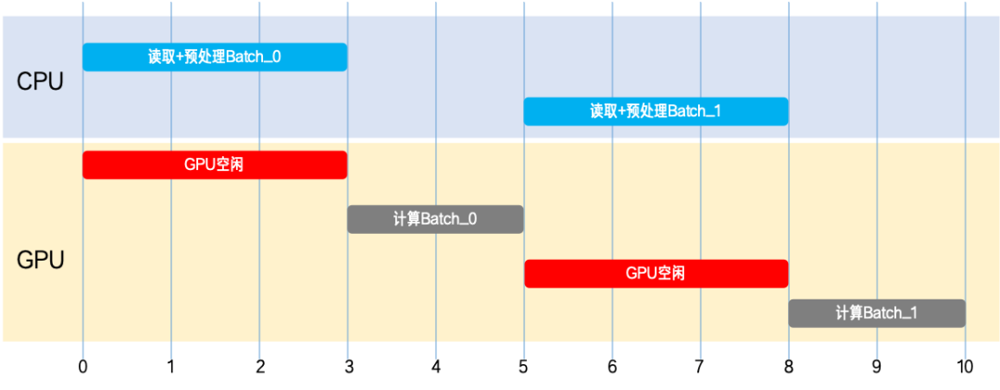
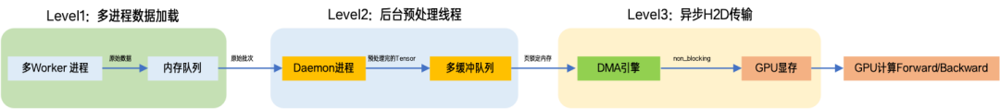
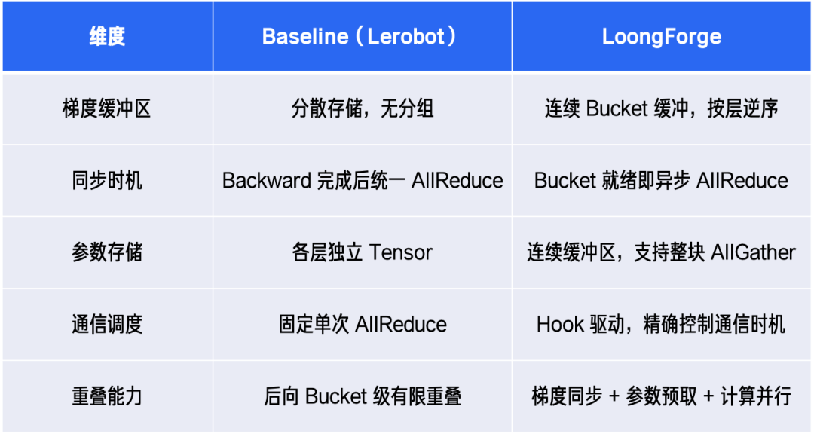
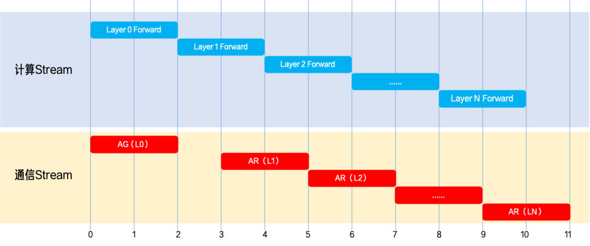
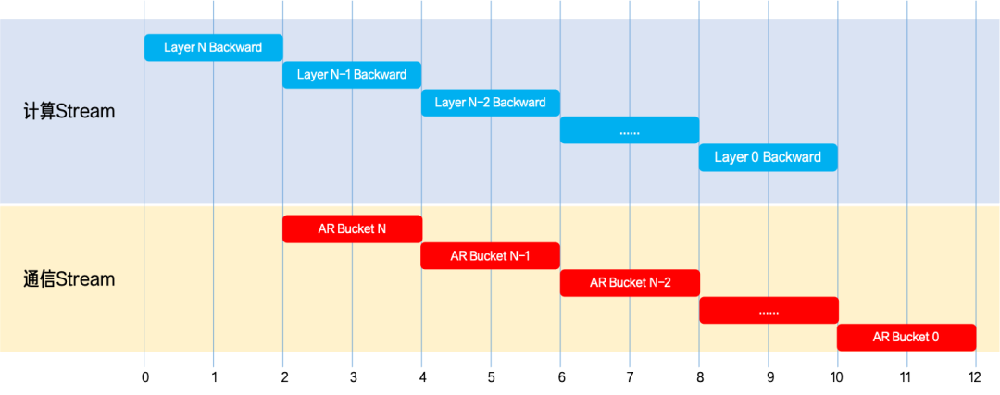
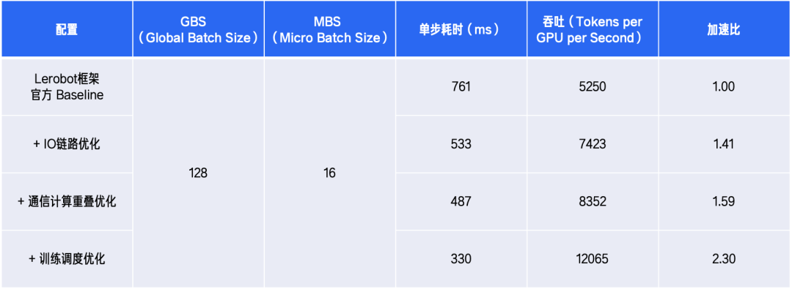

训练周期减半：LoongForge 全链路优化 GR00T N1.6 训练，吞吐提升至 2.3 倍
针对 GR00T N1.6 VLA 模型训练存在 IO 阻塞、通信开销大、算子调度低效等问题，百度百舸 LoongForge 完成全链路优化，最终实现 2.3 倍训练吞吐提升，训练周期缩短 56.6%。
官方网页地址：https://baidu-baige.github.io/LoongForge/
GitHub 地址：https://github.com/baidu-baige/LoongForge
1. 背景：具身智能底座 GR00T N1.6 的能力跃迁与挑战
在人形机器人加速走向产业化的进程中，Vision-Language-Action（VLA）模型凭借可打通「感知—理解—执行」全链路的技术优势，已经成为支撑人形机器人具身智能能力落地的核心技术路径。在一众具身智能基础模型中，NVIDIA 推出的 GR00T N 系列开源模型，凭借适配人形机器人场景的专属能力，成为该领域极具代表性的核心技术底座，被广泛应用于机器人智能训练与研发落地。
2025 年迭代升级的 GR00T N1.6，进一步革新了模型架构与动作生成范式，大幅强化了人形机器人的端到端智能控制能力。该模型以 Cosmos-Reason-2B 视觉语言模型作为多模态感知核心，并引入 32 层 DiT 构建动作生成主干网络，将机器人第一视角视频、本体状态以及自然语言指令统一建模为共享策略表征，从而实现感知、理解与动作控制的一体化建模。
得益于深层 DiT 对长动作序列的高精度建模能力，GR00T N1.6 的智能控制效果大幅提升，但也让模型训练呈现出计算密集、通信密集的双重高强度特征，训练成本与难度居高不下。
根据官方公开配置，其预训练阶段需采用 16384 的超大全局批次（Global Batch Size），依托 1024 张 H100 GPU 完成约 300K 步的训练任务；即便仅开展下游任务微调，单节点训练也需要持续数天之久。数据 IO 阻塞、多卡通信开销、训练调度低效等问题，使得 GR00T N1.6 训练成本高、周期长，阻碍模型快速迭代。
2. 方案概览：LoongForge 全链路系统级优化
为进一步提升 GR00T N1.6 的训练效率，百度百舸团队基于自研开源的全模态训练框架 LoongForge，对模型训练全链路进行了系统级优化与深度重构。
针对 VLA 训练场景的特点，LoongForge 团队重点围绕「数据 IO 链路」、「通信-计算重叠」以及「训练调度」三大方向进行了优化：
- 在数据处理中引入异步 Prefetch 机制，缓解数据加载与传输延迟导致的 GPU 空转问题；
- 基于分布式优化器，借助细粒度通信-计算重叠（Overlap）机制，降低多卡同步等待带来的额外开销；
- 通过适配 CUDA Graph，减少大量小粒度算子的 Launch Overhead。
相比官方训练实现，LoongForge 最终实现了最高 2.3 倍的训练吞吐提升，并将整体训练周期缩短 56.6%。那么，LoongForge 是如何进一步释放 GPU 算力、实现 GR00T N1.6 高效训练加速的？接下来，我们将系统拆解其背后的核心优化思路与关键技术实现。
3. 核心揭秘：2.3 倍加速背后的 3 大工程优化
为了进一步释放 GR00T N1.6 的训练潜力，我们并未停留在简单的参数调优，而是从数据 IO 链路、通信-计算重叠以及训练调度三个层面进行了系统级优化。
优化一：IO 链路优化 —— 异步数据 Prefetch
GR00T N1.6 的数据预处理包括视频解码、图像增强、多模态编码等 CPU 密集操作。在 Lerobot 框架中，GPU 大量时间处于空转等待数据状态，形成典型的 IO Stall。

LoongForge 通过三级异步流水线，实现数据生产与 GPU 训练解耦：
- Level 1 数据读取：多个 DataLoader Worker 并行从磁盘读取，每个 Worker 额外预取 n 个批次。
- Level 2 CPU 预处理：由独立 Daemon 线程执行图像、视频及文本预处理，通过双缓冲队列与训练主循环解耦，避免跨进程 Tensor 序列化开销。
- Level 3 GPU DMA 传输：利用页锁定内存（Pinned Memory）与非阻塞传输（Non-blocking Transfer），GPU 在独立 Copy Stream 上异步将数据搬入显存，与计算完全并行。
在 GPU 计算当前 Batch 时，下一 Batch 正在传输，更后 Batch 正在预处理，更远 Batch 正在读取，形成完整的 Pipeline Overlap。

通过 IO 链路优化，GPU 等待数据的时间被显著压缩，IO Stall 基本被隐藏。
优化二：通信-计算重叠优化 —— Megatron Distributed Optimizer 驱动的细粒度通信重叠
在 Lerobot 框架中训练 GR00T N1.6 时，存在以下典型瓶颈：
- 无参数预取：Forward 阶段需等待当前层计算完成后才拉取下一层参数，无法提前发起通信。
- 梯度存储分散，同步滞后：各层梯度独立存储，无法按 Bucket 逐步触发异步通信，导致 Backward 阶段完成后才触发 AllReduce，使得同步与计算串行执行。
为解决上述训练瓶颈，LoongForge 引入 Megatron Distributed Optimizer，通过连续化梯度缓冲区管理和基于 Hook 的通信调度机制，将参数同步、梯度归约与模型计算深度融合，实现细粒度的通信-计算重叠，有效隐藏通信开销并提升训练吞吐。
Baseline 与 LoongForge 核心优化特性对比如下：

具体采取的优化措施包括：
- Forward 阶段参数预取：在 Forward 期间，通过 Pre-hook 在 NCCL 通信 Stream 上提前发起下一层参数的 AllGather，使通信与当前层的计算并行。总耗时从「Forward + Backward + 通信 + Step」优化为「Forward + max(Backward, 通信) + Step」，通信开销几乎被完全掩盖。

- 基于 Bucket 的梯度同步 Overlap：连续梯度缓冲区按 Backward 顺序逆序排列，每个 Bucket 一旦计算完成，立即在独立 NCCL Stream 上发起 AllReduce，实现计算与通信并行。在时间线上表现为计算 Stream 和 NCCL 通信 Stream 的高度并行。

优化三：极致的训练调度优化 —— Per-Microbatch CUDA Graph for GR00T N1.6
Python 调度与 GPU Kernel Launch Overhead 往往是大模型训练中的隐形性能瓶颈。尤其在 GR00T N1.6 这类包含大量小粒度算子的 VLA 训练任务中，前向、反向以及 Loss 计算会触发大量细碎 Kernel。如果完全依赖 Eager 模式逐个 Launch，CPU 调度开销会被持续放大，GPU 利用率也难以充分释放。
CUDA Graph 是 GPU 生态中广泛使用的训练调度优化手段，能够通过 Graph Replay 减少 Python 调度与 GPU Kernel Launch 开销。
LoongForge 在此基础上，并未简单复用通用 CUDA Graph 流程，而是面向 GR00T N1.6 的真实 VLA 训练链路做了进一步适配：我们将训练过程中稳定、重复的 Forward/Backward 计算路径纳入 CUDA Graph，而将随机噪声采样、动态输入处理等更适合保留灵活性的逻辑留在 Eager 路径中；同时结合多 Microbatch 梯度累积与 DDP Overlap 的执行时序，重新划分 Graph Capture 与 Replay 边界，使 CUDA Graph 能够稳定应用于 GR00T N1.6 的真实多卡训练。

在 LoongForge 中，GR00T N1.6 训练保留了 Eager、Full-Iteration CUDA Graph 和 Per-Microbatch CUDA Graph 三条执行路径，分别服务于不同阶段和场景：
- Eager 模式：全局未启用 CUDA Graph 的路径，用于功能验证、Loss 对齐、动态图问题排查，以及新模型/新数据形态接入的初期阶段。
- Full-Iteration CUDA Graph：将一个完整 Iteration 内的多个 Microbatch Forward/Backward 以及 Grad Sync 固化为一个 CUDA Graph。这种方式能够最大化减少 CPU 调度与 Kernel Launch 开销，更适合用于验证 CUDA Graph 的吞吐上限。
- Per-Microbatch CUDA Graph：将捕获粒度进一步细化到 Microbatch。Capture 阶段不是固化整个 Iteration，而是为不同 Microbatch 的 Forward/Backward 子图生成更小的可复用 Graph；Replay 阶段按 Microbatch 顺序复用这些 Graph，并在最后一个 Microbatch 保留梯度同步逻辑，从而继续兼容 DDP Overlap。
相比 Full-Iteration，Per-Microbatch 模式不再单纯追求「更大的图」，而在于更强调「边界留对」：beta.sample、torch.randn 等随机数逻辑保留在 Eager 路径中，避免随机状态被 Capture 固化后影响 Loss 对齐；梯度同步点保留在合适的 Microbatch 边界，使 CUDA Graph 优化不破坏原有通信-计算重叠节奏。
为了让 CUDA Graph 稳定落地于 GR00T N1.6 的真实 Workload，我们对视觉编码器、语言主干和动作 DiT 等核心组件进行了 graph-safe 改造，包括静态 Buffer 复用、固定 Shape Padding、缓存位置编码与窗口索引、避免 Capture 阶段动态分配，以及替换部分非 Capturable 算子等，使 CUDA Graph 能够稳定应用于真实多卡训练流程。
通过该项优化，GR00T N1.6 训练在多卡场景下获得接近 1.5× 的吞吐提升。Per-Microbatch 模式在保持接近 Full-Iteration 性能的同时，具备更好的 Loss 对齐效果，为 GR00T N1.6 训练带来了更高效、更稳定的执行路径。
4. 性能实测：训练周期直接减半，时间缩短 56.6%
在 8×A800（80G）节点上，使用 Libero 数据集对 GR00T N1.6 模型进行了训练测试。在完整训练任务中，整体训练周期缩短 56.6%，显著提升了模型研发与实验迭代效率。
各优化阶段的性能对比如下：

5. 总结：提升 GPU 有效算力利用率
通过对训练调度、通信-计算重叠与数据 IO 链路的系统级优化，我们显著减少了 Python 调度开销、通信等待与数据供给空转，使 GPU 从「被动等待」转向「持续计算」。最终在不改变模型结构的前提下，实现 2.3× 加速与 56.6% 训练周期缩短，大幅提升模型迭代效率与研发节奏。
目前，相关优化已集成至全模态训练框架 LoongForge。我们欢迎具身智能领域的研究者与开发者共同探索更高效的 VLA 训练方案。